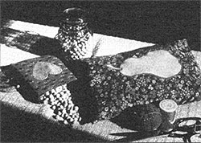

When life is a bowl of cherries, you can even use the pits!
When I was a young girl, I spent one beautiful summer and fall visiting relatives in Switzerland . . . it was a once-in-a-lifetime experience, full of small happenings that left big impressions. I especially remember the huge stove that warmed my aunt's house. The monstrous appliance took up the whole wall between her kitchen and dining room. A long stone bench ran along the entire length of the dining room side of the stove ... and a small warming oven - which could be opened from either side - was placed near the doorway. It was a delicious feeling to come in out of the garden on a cool evening and curl up on the warm bench, snuggling in one of the afghans that were always nearby.
And it was while nestling on my favorite perch that I witnessed my aunt's nightly ritual of popping cherrystone pillows into the warming oven . . . and then watched as each family member retrieved a pillow on his or her way to bed. The warmers were real luxuries, since they served to take the edge off the chill of cool linen sheets in unheated bedrooms.
Last winter, realizing that more and more folks were dependent on wood to heat their homes, and noting that my bedroom became colder and colder as the cost of any kind of heating continued to rise, I recalled those cherrystone pillows and decided they might still be the perfect solution to cold feet.
The little bed-warmers are quite simple to make. The hardest task seems to be remembering to save the cherry pits throughout the year. During the balmy days typical of cherry season, it's easy to forget about those long, cold winter nights. Just collecting the kernels is no easy task, either. In fact, if you're the ambitious sort who plans to make several pillows, I suggest you contact a cannery. It takes a phenomenal quantity of fruit to yield a usable amount of pits . . . 30 to 40 pounds of good ripe cherries generally supply enough "stones" to make one pillow!
COLLECT, CLEAN, AND DRY
Cherrystones must be thoroughly cleaned and dried before they can be sewed into pillows for warming your toes on a cold winter's night. First, pile the pits in a large pan - or use your kitchen sink - and cover them completely with fresh, cold water. Then rub and squeeze the stones together to loosen any remaining pulp. When that's done, rinse them and repeat the process several more times.
Once the cherry seeds look clean, simmer them in a pot of water - stirring occasionally - for about 15 minutes, after which you should dump the cooked stones into a sinkful of cold water and rub them again. Then rinse your bed-warmer stuffing a few more times (it's absolutely essential to remove all the pulp) before draining the stones and placing them on clean dish towels to dry. You can finish the dehydration process by spreading the pits in one layer across a shallow pan and baking them in a warm oven. Stir them now and then so they'll dry thoroughly. The pits will be evenly colored when "done", and ready to be stored indefinitely in jars, plastic bags, or paper sacks. (The last are the best choice, because they'll absorb any moisture that may still be present.)
To make the pillow cases, use a sturdy material such as denim, sailcloth, or drapery fabric. (You should, of course, avoid any kind of synthetic material that might melt when exposed to heat.) Then cut two rectangles measuring 8" X 11" . . . or a single 16" X 11" piece. Put the pieces together face to face (or fold the double-sized rectangle in half) and stitch around the edges, leaving an opening large enough to let you turn the bag right side out. Finally, fill the sack, keeping it loosely packed, with the dried cherrystones and sew up the hole. Your bed-warmer is ready for the next nippy night.
WHY NOT PEBBLES?
You may be wondering why I didn't take an easier route and use pebbles in my bed-warmer. Well, the truth is that cherry pits have a much lower conductivity and about three times the heat capacity of pebbles. Gravel may warm up fast, but it soon cools off. Grandmother, in her wisdom, knew that a nice warm bag of cherrystones will provide a chilly child (or adult) with steady, soothing warmth . . . for a long, long time!
|
 |
|
|